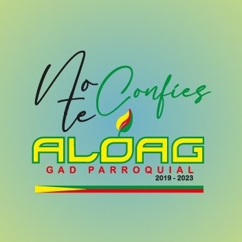
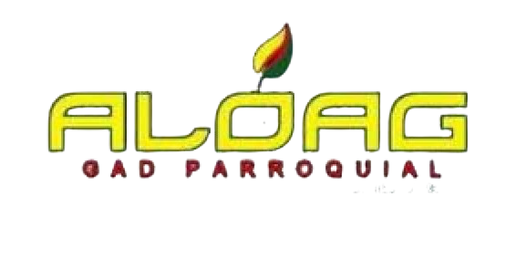

<a class="navbar-brand " >
  
  <a class="navbar-brand"  style="color: #0D924A;  font-weight: 700; font-family: 'Trebuchet MS', 'Lucida Sans Unicode', 'Lucida Grande', 'Lucida Sans', Arial, sans-serif; "  (click)="home()">
    
    GOBIERNO AUTÓNOMO DESCENTRALIZADO PARROQUIAL RURAL DE ALÓAG
  </a>
</a>

<nav  style="background-color: #ffffff;" class="navbar navbar-expand-md navbar-light sticky-top">
<!-- One of the primary actions on mobile is to call a business - This displays a phone button on mobile only -->
<div class="navbar-toggler-right">
  <button class="navbar-toggler" type="button" data-toggle="collapse" data-target="#navbar" aria-controls="navbarTogglerDemo02" aria-expanded="false" aria-label="Toggle navigation">
              <span class="navbar-toggler-icon"></span>
          </button>
</div>

<div class="col-md-2"   >
  <div class="imagen-menu">
    <a (click)="home()" style="cursor: pointer;">
      
    </a>
  </div>

</div>


<div class="collapse navbar-collapse flex-column " id="navbar">

  <ul class="navbar-nav  w-100  px-3">
    <li class="nav-item active">
      <button type="button" class="btn btn-outline-light  " aria-current="page"
      style=" margin: 5px; border: none; color: #5e5e5e;  font-weight: 700; font-family: 'Trebuchet MS', 'Lucida Sans Unicode', 'Lucida Grande', 'Lucida Sans', Arial, sans-serif;" (click)="home()">Inicio</button>
    </li>
    <li class="nav-item dropdown">
      <div class="dropdown">
        <a class="btn btn-outline-light" role="button" id="dropdownMenuLink" style="  color: #5e5e5e; margin: 5px; border: none; font-weight: 700; font-family: 'Trebuchet MS', 'Lucida Sans Unicode', 'Lucida Grande', 'Lucida Sans', Arial, sans-serif;"
          data-toggle="dropdown" aria-haspopup="true" aria-expanded="false">
          Información General
          <i class="bi bi-caret-down-fill"></i>
        </a>

        <div class="dropdown-menu" aria-labelledby="dropdownMenuLink">
          <button type="button" class="btn btn-outline-light "
          style=" margin: 5px; border: none;  color: #5e5e5e; overflow: hidden; font-weight: 700; font-family: 'Trebuchet MS', 'Lucida Sans Unicode', 'Lucida Grande', 'Lucida Sans', Arial, sans-serif;" (click)="vision()">Quienes Somos
          </button>
          <br>
          <button type="button" class="btn btn-outline-light "
            style=" margin: 5px; border: none;  color: #5e5e5e; overflow: hidden; font-weight: 700; font-family: 'Trebuchet MS', 'Lucida Sans Unicode', 'Lucida Grande', 'Lucida Sans', Arial, sans-serif;"
            (click)="historia()">Historia</button>
            <br>
            <button type="button" (click)="civicos()"  class="btn btn-outline-light "
            style=" margin: 5px; border: none;  color: #5e5e5e; overflow: hidden; font-weight: 700; font-family: 'Trebuchet MS', 'Lucida Sans Unicode', 'Lucida Grande', 'Lucida Sans', Arial, sans-serif;"
            >Simbolos Civicos</button>
            <br>
            <button type="button" (click)="barrios()" class="btn btn-outline-light "
            style=" margin: 5px; border: none;  color: #5e5e5e; overflow: hidden; font-weight: 700; font-family: 'Trebuchet MS', 'Lucida Sans Unicode', 'Lucida Grande', 'Lucida Sans', Arial, sans-serif;"
            >Barrios</button>
            <br>
            <button type="button" (click)="autoridades()" class="btn btn-outline-light "
            style=" margin: -3px; border: none;  color: #5e5e5e; overflow: hidden; font-weight: 700; font-family: 'Trebuchet MS', 'Lucida Sans Unicode', 'Lucida Grande', 'Lucida Sans', Arial, sans-serif;"
            >Organ. Institucional</button>


        </div>
      </div>
    </li>
    <li class="nav-item dropdown">
      <div class="dropdown">
        <a class="btn btn-outline-light" role="button" id="dropdownMenuLink" style="font-weight: 700; font-family: 'Trebuchet MS', 'Lucida Sans Unicode', 'Lucida Grande', 'Lucida Sans', Arial, sans-serif;color: #5e5e5e; margin: 5px; border: none; "
          data-toggle="dropdown" aria-haspopup="true" aria-expanded="false">
         Turismo
          <i class="bi bi-caret-down-fill"></i>
        </a>

        <div class="dropdown-menu" aria-labelledby="dropdownMenuLink">
          <button type="button"  class="btn btn-outline-light "
          style="font-weight: 700; font-family: 'Trebuchet MS', 'Lucida Sans Unicode', 'Lucida Grande', 'Lucida Sans', Arial, sans-serif; margin: 5px; border: none; color: #5e5e5e; overflow: hidden; font-size: small; font-weight: 500;" (click)="turismo()"
          >Lugares Turisticos</button>

          <br>
          <button type="button" (click)="fiestas()" class="btn btn-outline-light "
          style="font-weight: 700; font-family: 'Trebuchet MS', 'Lucida Sans Unicode', 'Lucida Grande', 'Lucida Sans', Arial, sans-serif; margin: 5px; border: none;  color: #5e5e5e; overflow: hidden;"
          >Fiestas</button>
        </div>
      </div>
    </li>

    <li class="nav-item dropdown">
      <div class="dropdown">
        <a class="btn btn-outline-light" role="button" id="dropdownMenuLink" style="font-weight: 700; font-family: 'Trebuchet MS', 'Lucida Sans Unicode', 'Lucida Grande', 'Lucida Sans', Arial, sans-serif;color: #5e5e5e; margin: 5px; border: none; "
          data-toggle="dropdown" aria-haspopup="true" aria-expanded="false">
         Proyectos
          <i class="bi bi-caret-down-fill"></i>
        </a>

        <div class="dropdown-menu" aria-labelledby="dropdownMenuLink">
          <button type="button" (click)="mayor()" class="btn btn-outline-light "
          style="font-weight: 700; font-family: 'Trebuchet MS', 'Lucida Sans Unicode', 'Lucida Grande', 'Lucida Sans', Arial, sans-serif; margin: 5px; border: none;  color: #5e5e5e; overflow: hidden;"
          >Adulto Mayor</button>
          <br>
        </div>
      </div>
    </li>
    <li class="nav-item active">
      <button type="button" (click)="trabajos()" class="btn btn-outline-light  " style="font-weight: 700; font-family: 'Trebuchet MS', 'Lucida Sans Unicode', 'Lucida Grande', 'Lucida Sans', Arial, sans-serif; color: #5e5e5e;margin: 5px; border: none; "
    >Trabajos</button>
    </li>
    <li class="nav-item active">
      <button type="button" class="btn btn-outline-light  " style="font-weight: 700; font-family: 'Trebuchet MS', 'Lucida Sans Unicode', 'Lucida Grande', 'Lucida Sans', Arial, sans-serif;color: #5e5e5e; margin: 5px; border: none; "
      (click)="contactos()">Contactos</button>
    </li>
  </ul>


</div>

</nav>


